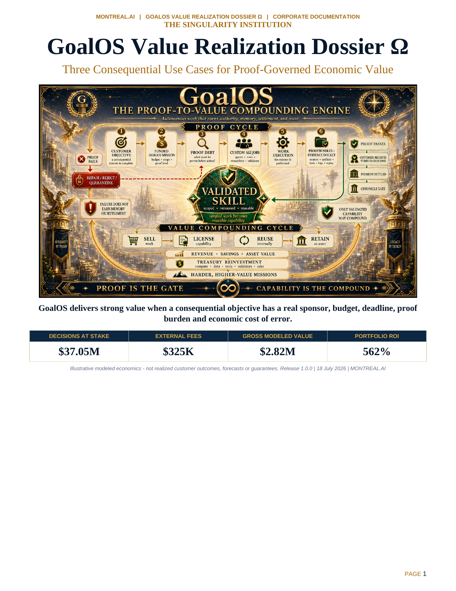

AI Deployment Decision Assurance
701% modeled ROI
Protect or accelerate a $6.0M enterprise AI decision with explicit acceptance, control and rollback evidence.

See the three strongest use cases, the modeled economics, the value qualification rule and the precise claim boundary.
701% modeled ROI
Protect or accelerate a $6.0M enterprise AI decision with explicit acceptance, control and rollback evidence.
677% modeled ROI
Support a $30.0M board decision through proof, sensitivity, independent review and terms protection.
269% modeled ROI
Prove or falsify one enterprise offer before another six months of modeled GTM burn.